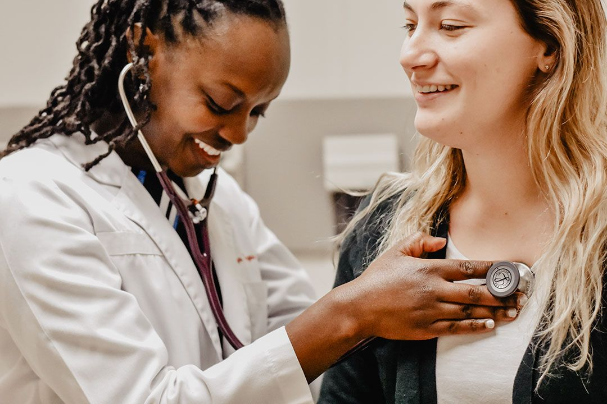

ACADEMIC OVERVIEW
CHA's academic vision statement declares that “Academics is Fundamental to Cambridge Health Alliance”. Just over fifty years ago, Harvard University and the City of Cambridge affiliated in order to radically improve the poor quality of medical care at its public hospital. That decision spawned a new era. Academic programming attracted an excellent medical staff and fostered an increasingly empathetic, curious, socially committed and well-trained medical community. It served to improve the health of our local communities, but moreover, to shape medical practice, education and policy for the nation. Our reputation is increasingly well-known and well-earned in our communities, the Massachusetts State House, Washington D.C, and in academic centers around the nation. It would not be an overstatement to say that CHA would not exist today if it were not for its academic affiliations and pursuits.
We track academic progress in two ways: through this bi-annual narrative report and through a “scorecard”. This report details our efforts to advance academics and to demonstrate how these synergize with CHA's strategic priorities. The scorecard highlights several easily tracked and important areas of emphasis and accomplishment.
These are some highlights of accomplishments of the past two years:
- 32 CHA graduates of our residency programs joined the medical staff (77 since
2013);
- 6 Harvard faculty members were promoted, including 2 to full Professor, and 2 Tufts
faculty
members to Associate Professor;
- CHA staff published 225 peer-reviewed articles in journals accessible through the
National
Library
of Medicine's Medline;
- 27 new research protocols were approved this past year. The Office of Sponsored Research
is
managing 30 active grants and contracts;
- All residency programs have received full accreditation including our fledgling Pharmacy
Residency
Program;
- Dozens of faculty members from many disciplines participated in continuing education
fellowships;
- The graduating students rated CHA's “clinical learning environment” extremely highly.
In this report, we contextualize CHA as a socially accountable health care system, describing the linkage between CHA's academics and its strategic direction. We include our “Academic Scorecard”. Next, we describe the major recent activities designed to achieve our academic vision, noting the obstacles we face and future plans. Brief descriptions of major initiatives and programs selected by the Department Chiefs follow. The report concludes with an appendix that includes our recent publication citations, award recipients and other useful data
This report is undoubtedly incomplete. First, the purview of the Academic Council and the Center for Professional and Academic Development is limited to the credentialed medical staff. Second, despite collecting data through multiple means and surveying the Department Chiefs and Academic Council members repeatedly, we anticipate that individuals, programs or plans may have been misstated or left out altogether. We regret any errors and hope our readers will give us feedback to improve the next report.

CHA: A Socially Accountable Health System
Cambridge Health Alliance is a socially accountable health system, dedicated to addressing the priority health needsofitscommunitiesthroughitsservice,education, research and advocacy. CHA’s mission statement – “to improvethehealthofourcommunities”–speaksof thissocial accountability.Weaspiretoreducesuffering causedbydisease. Yet,inaddition to treating illness,we seektopreventdiseaseandtoimprovehealthandwellbeing. We seek to attend to social determinants of health byengaging with community partners, not just with individuals. Inproclaiming our motto, “we care for all,” we embrace patients and communities that are especially vulnerable – those who suffer from economic and social deprivation, mental illness and addiction, racism and traumatic experiences. Immigrants, including those seeking asylum, comprise nearly a majority ofour patients. As a highly integrated community-oriented health system, we meld primary care practice with public health. The organization’s CEO serves as the Commissioner of Health for the City of Cambridge. We work closely with governmental agencies and community organizations in a half-dozen cities north of Boston. CHA serves asa portal tothe best ofhealth care inthe world. Weoffer primary care at a dozen health centers spread throughout the region aswell asinhigh schools, nursing homes, shelters andhomes. Primary care clinicians with training in Family Medicine, Internal Medicine and Pediatrics work and teach side-by-side with behavioralhealth and allied health practitioners atmany of these settings.
.png)
Behavioral health care isa “center ofexcellence” atCHA, extensively programmed in community settings, health centers and hospital units for children, adults and elders. We provide secondary hospital care at our Cambridge and Everett Hospital campuses and specialty care at many convenient settings. Finally, we engage our patients in tertiary andquaternary care atour affiliates – Beth Israel Deaconess Medical Center for adults and Massachusetts General Hospital for pediatric care. CHA seeks to serve as an international model. We advocate for policies that support equitable care for all and test organizational structures that facilitate community care and collaborative person-centered caring. CHA embraces the WHO’s Global Strategy on Human Resources for Health, which aspires toward “universal health coverage with safe, effective, person-centered health services by 2030.”